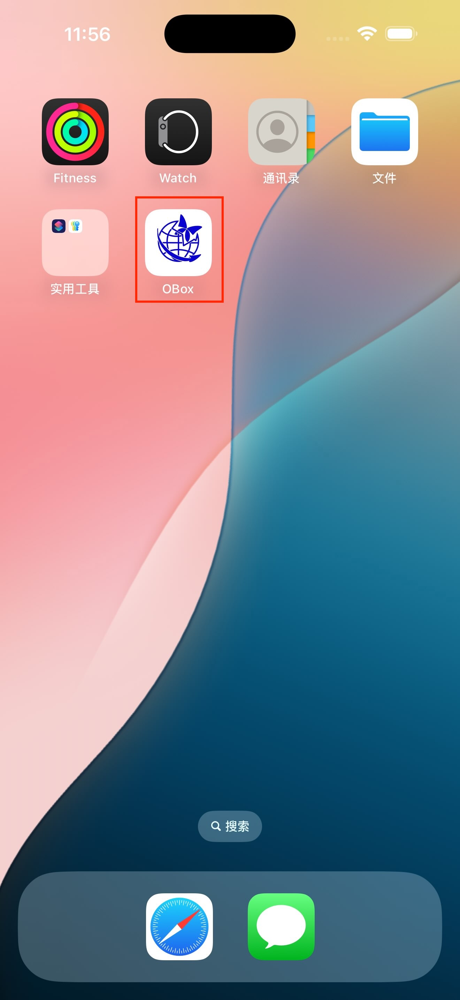
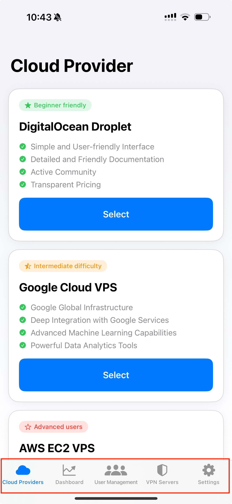
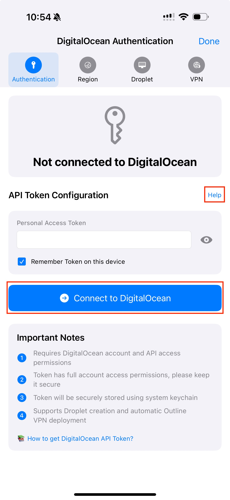
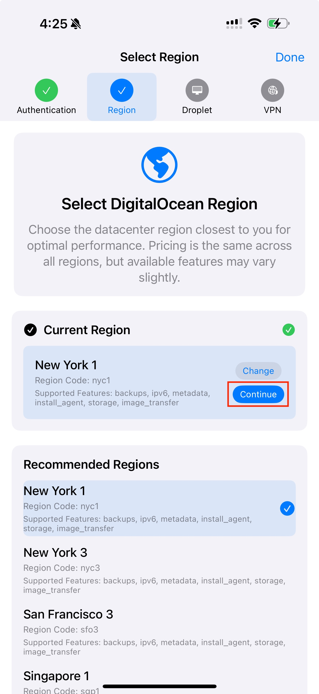
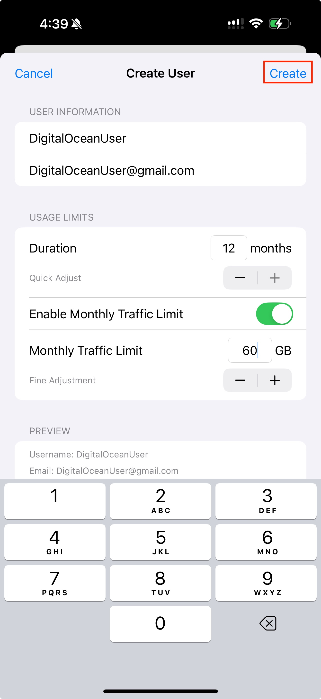
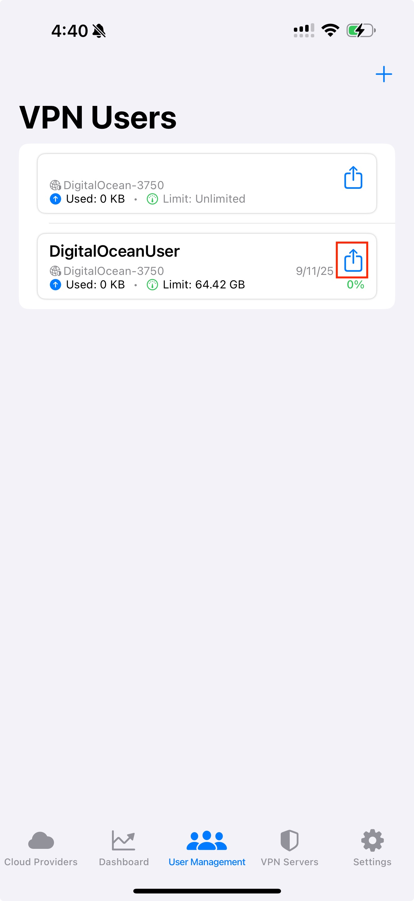
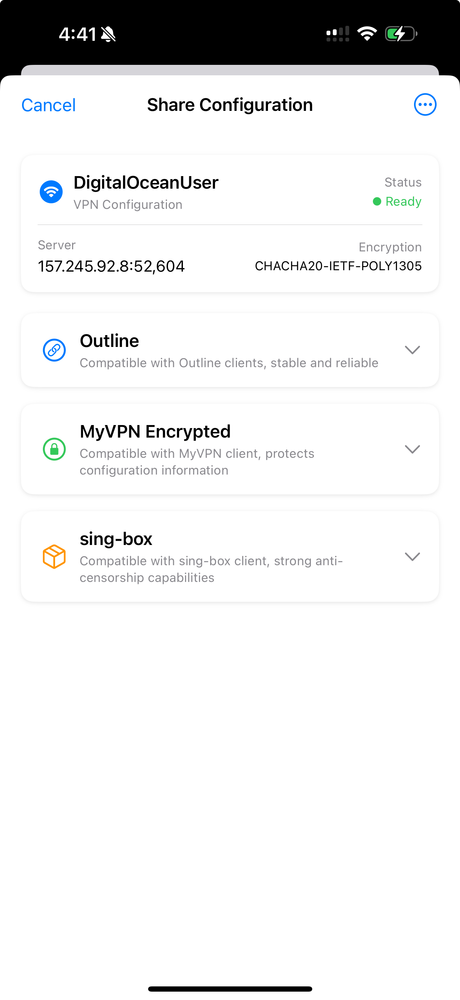
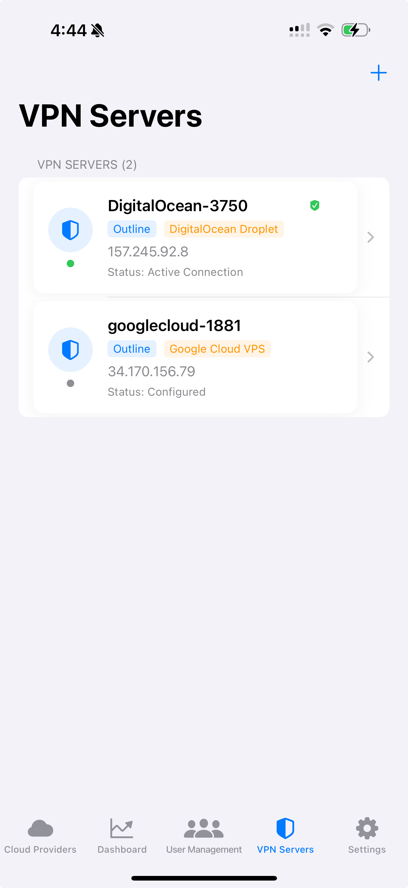
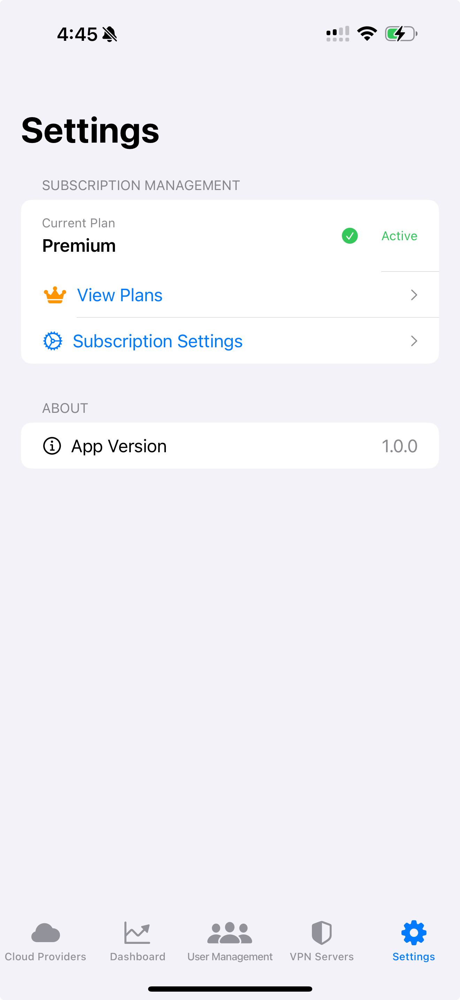

OBox MyCloud iOS应用操作手册
版本 1.0 | 兼容 iOS 17.0+
应用概述
OBox MyCloud是一款私人VPN管理应用，让您能够：
多云部署
在多个云服务商上部署VPN服务器（DigitalOcean、Google Cloud、AWS）
用户管理
创建和管理基于时长和流量限制的VPN用户
安全共享
安全地共享VPN配置
性能监控
监控服务器性能和用户活动
系统要求
- iOS 17.0或更高版本
- 活跃的互联网连接
- 云服务商账户（DigitalOcean、Google Cloud或AWS）
入门指南
初始设置
1. 下载并安装应用
从App Store下载OBox MyCloud应用并完成安装

2. 启动应用
启动应用并查看欢迎界面，浏览各个标签页以熟悉界面：
- 云服务商：设置和管理云服务器
- 仪表板：概览和快速操作
- 用户管理：创建和管理VPN用户
- VPN服务器：连接和管理服务器
- 设置：订阅和应用偏好设置

3. 首次配置
- 从云服务商标签页开始
- 选择您首选的云服务商
- 按照所选服务商的设置向导操作
- 创建您的第一台VPN服务器
- 设置您的第一个用户账户
设置云服务商
DigitalOcean设置
步骤1：身份验证
- 导航至云服务商标签页
- 选择DigitalOcean
- 转到身份验证标签
- 获取您的API密钥：
- 访问DigitalOcean控制台
- 转到API部分
- 生成新的个人访问令牌
- 在应用中输入API密钥
- 启用"记住密钥"以便使用
- 点击"连接"进行身份验证

步骤2：区域选择
- 移至区域标签
- 选择最接近您用户的区域
- 推荐区域：NYC1、SFO3、SGP1、FRA1、LON1
- 选择后点击"继续"

步骤3：Droplet创建
- 转到Droplet标签
- 点击"创建新Droplet"
- 配置基本设置：
- 名称：使用自动生成的名称或输入自定义名称
- 大小：选择推荐的VPN大小（≤$6/月）
- SSH密钥：使用"自动生成密钥"（推荐）
- 点击"创建"并等待完成
步骤4：VPN安装
- 移至VPN标签
- 点击"开始安装"
- 等待SSH连接和Outline安装
- 提示时保存配置
创建和管理用户
创建新用户
- 导航至用户管理标签页
- 点击"+"按钮
- 填写用户详细信息：
- 用户名：必填，唯一标识符
- 邮箱：可选，用于参考
- 使用期限：设置过期时间（1-12个月或无限制）
- 流量限制：设置数据配额（1GB-1000GB或无限制）
- 查看预览部分以确保准确性
- 点击"创建用户"


订阅限制
- 免费套餐：最多10个用户
- 高级套餐：50、200或无限用户
- 达到限制时在设置中升级订阅
共享VPN配置
通过多种格式与用户共享VPN访问：

安全最佳实践
- 使用加密共享进行敏感部署
- 单独共享密码和加密链接
- 为临时访问设置适当的过期时间
- 定期监控用户活动
管理VPN服务器
服务器列表概览
VPN服务器标签页显示所有已配置的服务器：
- 连接状态：在线（绿色）、离线（红色）、连接中（橙色）
- 服务器信息：名称、IP地址、端口、版本
- 用户数量：每台服务器上的用户数

仪表板概览
自动刷新
- 仪表板每30秒自动更新
- 下拉手动刷新
- 服务器连接的实时状态
设置和订阅

应用设置
- 用户界面：主题选择、语言、通知
- 数据管理：自动备份、同步设置、存储管理
- 账户信息：应用版本、支持、隐私政策
故障排除
常见问题和解决方案
连接问题
问题：无法连接到VPN服务器
解决方案：
- 检查互联网连接
- 在VPN服务器标签中验证服务器状态
- 尝试连接到不同的服务器
- 重启应用并重试
- 检查云服务商账户状态
常见错误消息
- "订阅限制已达到" - 升级订阅或删除未使用的用户
- "服务器无法到达" - 检查互联网连接，验证服务器状态
- "配置无效" - 重新创建服务器或从备份恢复
备份和恢复
- 定期备份：每周导出数据库
- 更新前：应用更新前务必备份
- 多个位置：在多个位置存储备份
- 测试恢复：定期验证备份完整性
快速参考
基本工作流程
- 首次设置：云服务商 → 身份验证 → 创建服务器 → 安装VPN
- 添加用户：用户管理 → 创建用户 → 共享配置
- 连接VPN：VPN服务器 → 选择服务器 → 连接
- 共享访问：用户管理 → 选择用户 → 选择共享方法
支持资源
- 应用版本：在设置中检查最新版本
- 系统要求：iOS 17.0+
- 存储空间：大约需要50MB
- 网络：稳定的互联网连接至关重要
本操作手册涵盖OBox MyCloud的核心功能。如需高级功能或特定技术问题，请查阅应用内帮助系统或联系技术支持。